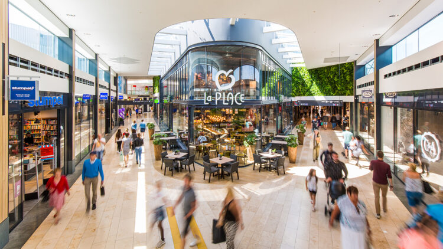
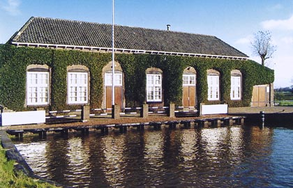

Middenwaard is het grootste overdekte winkelgebied boven het Noordzee kanaal. Met ruim 42.000m2 winkeloppervlak en meer dan 140 verschillende winkels en restaurants vindt u hier voor ieder wat wils. In Middenwaard vindt u ook een theater, een bioscoop en een gezellige horecaboulevard.
De huidige Huygendijk is eigenlijk de destijds zogenoemde "Nieuwe Huygen ofte Waert Dyck" en "Nieuwe Otterlycker Dyck" welke circa 1630 parallel aan de historische Huygen Dijck is aangelegd om de Heerhugowaard in te polderen. De historische Huygen Dyck is de huidige Noordschermerdijk en Slingerdijk.